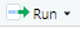

Chapter 2 Introduction to R
2.1 Before you start
Make sure you have R and RStudio installed. If you have a mac, you also need to install Xtools from the app store. If you have windows you also need to install Rtools.
2.2 Getting around Rstudio
R studio is a friendlier way to use R. When you open RStudio you will see four panes.
You can open a new script by clicking File > New File > R Script
We will work by typing in the script.
2.3 R as a calculator
Now that you have seen all the potential that R has, let’s go back to the basics and get started.
Let’s play with some numbers. You can use R as a plain calculator doing all of the basic operations such as addition, multiplication, division and substraction.
For instance, write a expresion (say 3 + 2) and then hit the run button  to execute the line.
## [1] 5You can also do multiple calculations by using the semicolon (;) to separate multiple commands
## [1] 5## [1] 62.3.1 Practice
Practice combining operators. Can you see the difference?
## [1] -2## [1] 12Tips! The rules for the order of operations are important.
- Patenthesis () first, then
- Exponents (powers and square roots), then
- Multiplication and division (left-to-right), and finally
- Addition and substraction (left-to-right)
2.4 Functions
R has many built in functions for common operations you might have seen before such as: “sqrt”, “log”, “abs”.
We will see lots of functions in R! And, R packages that are a collection of R functions.
Square Root
## [1] 5Powers
## [1] 9Absolute value
## [1] 43Natural logarithms (“log”)
## [1] 2.302585Logarithms using base 10
## [1] 1Tips! R is case sensitive, so ‘Log(10)’ will not work at all.
You will get an error:
Error in Log10() : could not find function “Log10”
Trigonometric functions: e.g., sin (“sin”)
## [1] 12.5 Mathematical constants
R also knows commonly used mathematical constants such as π
## [1] 3.141593More generally, Functions will execute certain actions. You can call functions by writing the name of the function followed by round parenthesis ().
Tips!
When you are typing the name of a function, R is actively searching for functions with similar spelling, so you can select the one you are looking for. See the example below:
Functions can be very useful. For instance, let’s use “round” to round the mathematical constant ‘π’ to two decimal places.
## [1] 3.14rounds down, using “floor” function
## [1] 19rounds up, using “ceiling” function
## [1] 20This is your turn!
Practice, practice, practice!!
Hopefully you get lots of Error messages.
Try to understand what are the issues and solve them.
Your learning process will improve substantially
2.6 What is an object in R
R is an objet-oriented program. It means that everything in R is an object.
So, an object in R is a structure having some attributes (data type) and methods acting in its attributes.
Let’s talk about the first part, the data type. For instance, the most basic data type in R is a vector which refers to an atomic quantity that can hold only one value.
## [1] 1You can use vectors to build more complex ones.
Let’s see types of vectors (modes: numeric, logic and character)
Number
## [1] 5You can use the function “class” to see the ‘mode’ of the object.
## [1] "numeric"## [1] 7Checking for numeric type
## [1] "double"All real numbers are stored in double precision format. If you requiered integer use the function “as.integer”:
## [1] 7## [1] 10Logical value
Is a larger than b? (Remember a is 5 and b is 7)
## [1] FALSEIs a smaller than b?
## [1] TRUE## [1] "logical"Character (string)
## [1] "rain"## [1] "character"Remember to use quotation marks to encapsule the string (e.g., “rain”). Otherwise you will get an error. Try it!
Let’s try this. Numbers within quotation marks.
Then, d + e (are you expecting 17?)
You will get an error:
Error in d + e : non-numeric argument to binary operator
You can coerce these character mode objects into a number, using the function “as.numeric”
## [1] 17At this point you might notice that we are using this operator:
<-
Tips!
<- is the preferred assigment operator in R.
<- always means assigment.
Whereas = can mean assigment, function argument binding or case statement (you will see more details on this later on).
Good practice: use <- to assign values to an object.
should be used together and be written without using a space.
Data types
| Same mode | Different mode | |
|---|---|---|
| 1 dimension | Vector | list |
| e.g., (2,3,4,5) | e.g., (3, “frog”, 3.5, FALSE) | |
| 2 dimension | Matrix | data frame |
Before entering the world of more complex data types, let’s try to understand the second part of the the object’s definition:
An object in R is a structure having some attributes (data type) and methods acting in its attributes.
The next slide is an example that will give you a general idea.
We will come back with more examples later on.
## [1] "character"Let’s try to perform this function sqrt(c)
You will get an error:
Error in sqrt(c) : non-numeric argument to mathematical functionThis is because “sqrt” does not work on objects of mode ‘character’.
So, objects are not simply collection of data with different structures. Operations and functions are defined for speciefic classes and modes.
Vectors
A vector is a sequence of data elements of the same mode.
Let’s use the function concatenate “c” to create a vector
## [1] 2 4 6 8 10Let’s use the function “length” to know the number of elements in this vector
## [1] 5Let’s add this vector to an object
## [1] 2 4 6 8 10